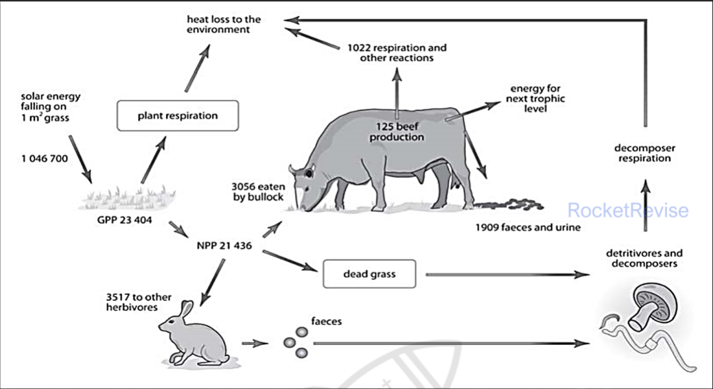
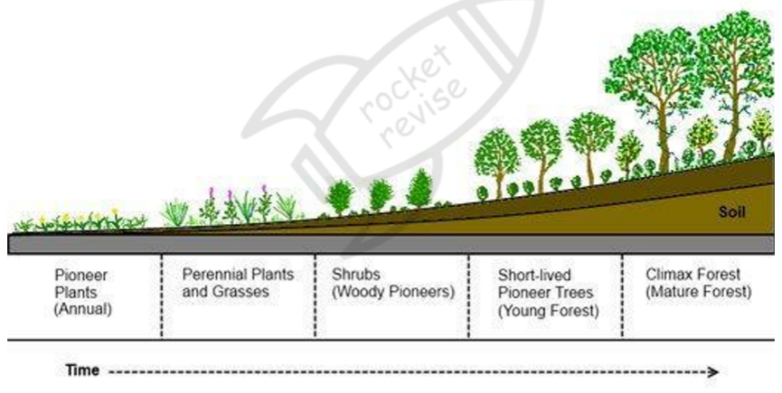
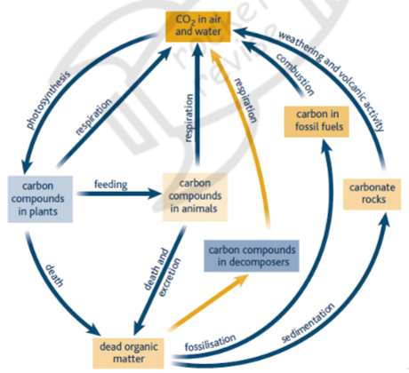
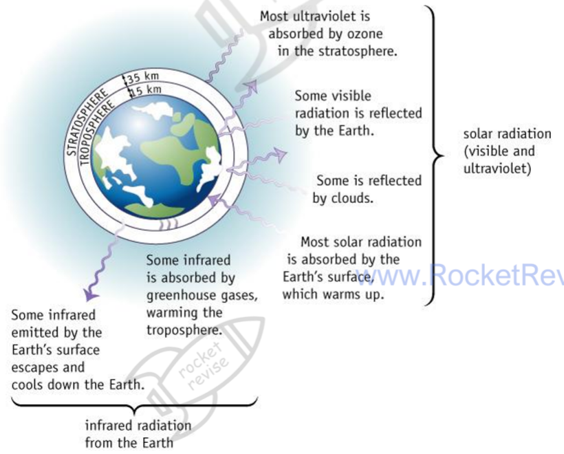
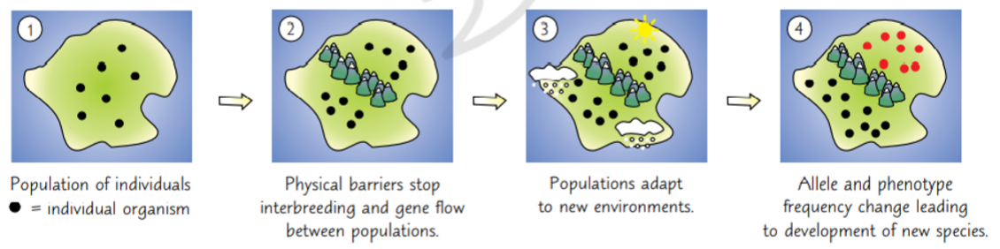

Ecology, environment and climate change
Ecology asks why organisms live where they do, how many of them there are, and how energy and carbon move between them and their surroundings. This page covers energy flow, distribution and abundance, succession, the carbon cycle, the greenhouse effect, the evidence for climate change and its effects on living things, and how a changing climate drives evolution and the formation of new species.
1. Key terms
- Habitat: the place where an organism lives, such as a rocky shore or a rainforest. A microhabitat is a small part of a habitat with its own conditions.
- Population: all the individuals of one species living and breeding together in a habitat.
- Community: all the populations of all the different species living in a habitat at the same time.
- Ecosystem: a community together with its physical and chemical environment, including the nutrients that cycle through it.
- Niche: the role of a species in its community: what it feeds on, what feeds on it, where and when it is active, and the conditions it needs.
- Abiotic factors: non-living conditions such as temperature, light, water, oxygen and soil pH. Biotic factors: effects of other living things, such as competitors, predators, parasites and disease.
- Abundance and distribution: abundance is how many individuals of a species are present; distribution is where the species is found.
2. Energy flow through ecosystems
Almost all the energy in an ecosystem comes from the Sun. Producers capture only about 1 to 5% of the light that falls on them. The rest is reflected, passes straight through the leaf, is the wrong wavelength to be absorbed, misses the chloroplasts or is used to evaporate water. The energy that is captured becomes chemical energy in organic molecules and then passes along food chains. Energy is lost from the chain as heat at every step, so it flows through an ecosystem in one direction and must be replaced constantly by new sunlight. Each feeding position in a food chain is a trophic level.
Productivity is the rate at which energy is stored as new biomass, so it is given per unit area per unit time, usually kJ m⁻² year⁻¹. Gross primary productivity (GPP) is the total energy that plants fix in photosynthesis. Plants use part of it in their own respiration (R). The rest, net primary productivity (NPP), is stored in new plant biomass and is the energy available to herbivores and decomposers.
NPP = GPP − R, where R is the energy used in respiration by the plants. Only NPP is available to the next trophic level.
Consumers waste much of the energy in their food. Some plant material is never eaten, such as roots and bark, and some cannot be digested, such as cellulose and lignin, so it leaves as faeces. Energy is also lost in urine, and much is used in respiration for movement and to keep warm. Only what is left builds new body tissue. This is the net secondary productivity of the consumer: energy in food eaten − energy in faeces and urine − energy used in respiration. Dead organisms, faeces, shed fur and skin all pass energy to decomposers.
Efficiency of energy transfer (%) = (energy available at one trophic level ÷ energy available at the previous trophic level) × 100. Transfers are usually inefficient, often about 10% and sometimes much less, which is why food chains rarely have more than four or five levels.
A salt-marsh grass, Spartina, has a GPP of 36 000 kJ m⁻² year⁻¹ and loses 28 000 kJ m⁻² year⁻¹ in respiration, so its NPP is 36 000 − 28 000 = 8000 kJ m⁻² year⁻¹.
Herbivorous insects take in 300 kJ m⁻² year⁻¹ of this energy.
Efficiency = 300 ÷ 8000 × 100 = 3.75%.
The energy of the previous level, here the producers' NPP, goes on the bottom because it is the energy that was available to be transferred.
The grazing food chain below shows the same ideas in one square metre of grassland. Of 1 046 700 kJ m⁻² year⁻¹ of sunlight, the grass fixes 23 404 kJ as GPP, an efficiency of 23 404 ÷ 1 046 700 × 100 = 2.24%. Its NPP is 21 436 kJ, so plant respiration is 23 404 − 21 436 = 1968 kJ. A bullock eats 3056 kJ, loses 1909 kJ in faeces and urine and 1022 kJ in respiration, and stores 125 kJ as beef: 125 ÷ 3056 × 100 = 4.1% of the food it eats. As a share of the original sunlight, the beef is 125 ÷ 1 046 700 × 100 = 0.012%.

Transfer from producers to herbivores is usually less efficient than transfer between carnivores. Plants contain a lot of cellulose and lignin that animals cannot digest, much plant material is inedible and passes to decomposers, and plant tissue holds less energy per gram than animal tissue, which is mostly protein and fat.
If asked why keeping cattle indoors raises the efficiency of energy transfer, explain the cause: they move less and lose less heat keeping warm, so less energy is used in respiration and more of their food energy becomes new body mass.
What changes productivity
NPP varies from place to place. More light gives more photosynthesis, which is why NPP falls with depth in water. Warmer temperatures speed up the enzymes of photosynthesis, up to the optimum. More rainfall provides water for photolysis and for carrying mineral ions, so GPP and NPP rise. Low carbon dioxide or a shortage of nitrate and phosphate also limit growth. In an old forest, NPP falls because the trees grow more slowly and shade one another, and more of the energy fixed is used to maintain the large mass of trunks and branches. NPP is averaged over a whole year because it changes with the seasons.
3. Distribution and abundance
Each species can only survive and reproduce within a range of each condition, its range of tolerance, and it does best near the optimum. The numbers and distribution of organisms in a habitat are therefore controlled by abiotic factors and by biotic factors.
Abiotic factors
Temperature acts mainly through enzymes. Below 0 °C, water in cells freezes, ice crystals damage cells, and enzymes have too little kinetic energy to work. Above about 40 °C, most enzymes and other proteins start to denature, so metabolism fails. Light provides the energy for photosynthesis, so it controls primary productivity and, indirectly, the food supply of every other organism. Some plants are adapted to shade, for example with large leaves or more chlorophyll, and seasonal changes in day length control breeding and behaviour in many animals.
Water availability depends on rainfall, evaporation and drainage, and controls the germination and growth of plants. In water, oxygen is often limiting: cold, fast-flowing water holds more dissolved oxygen than warm, still water. Waterlogged soil has little oxygen for root respiration, so only specially adapted plants grow there. Wind increases cooling and water loss, and strong currents or storms can remove whole populations. Soil (edaphic) factors include pH, which affects enzymes and the availability of nutrients, and the mineral content and structure of the soil. Topography matters too: in the northern hemisphere a south-facing slope is warmer because it receives more sun, steep slopes drain quickly, and higher altitude is colder and windier.
| Biome | Typical conditions | Biodiversity |
|---|---|---|
| Tropical rainforest | Warm and wet all year, plenty of light | Very high |
| Temperate forest | Mild, moist, distinct seasons | Medium to high |
| Temperate grassland | Warm summers, cold winters, low rainfall | Medium |
| Taiga (coniferous forest) | Long cold winters, short summers | Low |
| Tundra and desert | Very cold, or very dry with extreme temperatures | Very low |
Biotic factors
Competition happens when organisms need the same limited resource, such as food, water, light, space, mates or nesting sites. Intraspecific competition is between members of the same species. When resources are scarce, fewer individuals survive and breed, so population growth slows; when resources are plentiful, numbers rise. Interspecific competition is between different species whose niches overlap. It reduces the abundance of both, and if the overlap is large one species can eventually replace the other completely. Experiments with two species of Paramecium show this: each grows well alone, but grown together one dies out.
A predator kills and eats living prey. Predator and prey numbers often rise and fall in cycles. When prey is plentiful, more predators survive and breed; they then eat prey faster than it reproduces, so prey numbers fall; with less food, predator numbers fall, and the prey can recover. The predator peak comes after the prey peak. Parasites live on or in a host and harm it, and disease weakens individuals so they breed less and are caught more easily. In mutualism both partners benefit.
Density-dependent and density-independent factors
Density-independent factors affect a population whatever its size. Extremes of temperature, floods and storms are examples; they mainly limit where a species can live. Density-dependent factors have a greater effect when a population is crowded. Disease and parasites spread more easily, competition for food and territory is stronger, and individuals without a territory are less able to breed. These factors mainly control abundance.
How the niche explains distribution and abundance
Two species cannot share exactly the same niche in the same habitat for long, because the better competitor will outcompete the other. Species that live together therefore differ in at least some part of their niche, such as their food, the part of the habitat they use or the time they are active. A habitat with more niches, such as a mixed woodland with several layers of vegetation, can support more species. Some insects avoid competition between their own young and adults because the larvae and adults feed on different foods and so occupy different niches.
To measure abundance, ecologists sample the habitat. For plants, quadrats are placed at random coordinates read along two tape measures, so that the choice of position is not biased.
4. Succession
Succession is the change in the communities living in an area over time. Each community changes the abiotic conditions, for example by adding organic matter to soil or by shading the ground, and this allows other species to colonise and outcompete the earlier ones. The process continues until a stable climax community is reached.
Primary succession
Primary succession starts on bare, lifeless ground with no soil, such as new volcanic rock or rock left by a retreating glacier. The conditions are harsh: there is no soil to hold water or minerals. The first colonisers, pioneer species such as lichens and mosses, are adapted to survive there. They help to break the rock into small grains, and when they die, decomposers break down their remains into humus. Rock grains and humus together form a thin soil. Plants with small, shallow roots, such as grasses, can now grow; as they die they add more organic matter, so the soil becomes deeper, holds more water and minerals and becomes more fertile. Larger plants follow: shrubs, then fast-growing pioneer trees, and finally the slower-growing trees of the climax forest.

Through a succession, the number of species and the total biomass increase, more organic matter is decomposed, and the community's total respiration rises. Because respiration catches up with photosynthesis, net community production falls as the community matures.
Secondary succession
Secondary succession happens where soil is already present but the vegetation has been removed, for example after a fire or after a forest has been cleared. The soil contains seeds, roots and soil organisms, so plants grow quickly as soon as there is light and water. The sequence is similar to primary succession, but it is faster and starts with more species.
Climax communities and plagioclimax
A climax community is stable and complex, with many species and many interactions, and it stays the same unless the environment changes. Which climax forms depends on the climate, so it is called a climatic climax. In a temperate climate it is usually forest, because once deep soil has formed there is enough water and the temperatures are mild enough for large trees. In a polar climate the climax has only herbs or low shrubs, because water is scarce, temperatures are low and the seasons are extreme. Human activities such as mowing, grazing and burning can stop succession at an earlier stage. The community that results is a plagioclimax: a regularly mown field stays as grassland even though the climate could support woodland.
5. The carbon cycle
Carbon cycles between the atmosphere, living organisms, dead organic matter, the oceans and rocks. Plants take in carbon dioxide in photosynthesis and build it into carbohydrates, proteins and lipids. Carbon passes to animals when they feed. All organisms return carbon dioxide to the air in respiration. Where dead material cannot decay, for example in waterlogged bogs, carbon can be stored for millions of years and may form fossil fuels. Burning fuels releases this carbon again.

The role of microorganisms
Decomposers, mainly bacteria and fungi, secrete enzymes onto dead organic matter. The enzymes hydrolyse large molecules, such as starch, cellulose and proteins, into small soluble ones, for example by breaking glycosidic bonds to release glucose. The microorganisms absorb these products and use them in respiration, releasing carbon dioxide that plants can fix again. Without decomposers, carbon would stay locked in dead material and the supply of carbon dioxide for photosynthesis would run down. Decomposition also returns minerals such as nitrate to the soil.
Carbon sinks
A carbon sink is a store that holds carbon out of the atmosphere for a long time. Limestone and other carbonate rocks hold the largest store. The oceans hold a great deal of dissolved carbon and carbon in the shells of marine organisms. Fossil fuels, peat and forests are also major stores. Carbon in these stores rarely escapes unless the store is burned, drained, cleared or broken down.
How humans increase atmospheric carbon dioxide
Burning fossil fuels releases carbon that was locked away for millions of years, so it adds to the amount in the air. Deforestation raises carbon dioxide in two ways: fewer trees are left to remove it by photosynthesis, and the carbon in the wood is released when it is burned or decays. Clearing forest also warms the bare soil, which speeds up respiration by soil microorganisms and the breakdown of soil organic matter. Accurate measurements since 1957 show a rising trend, from about 315 ppm in 1957 to about 350 ppm by 1988, with a yearly cycle: the level is lower in summer, when photosynthesis is fastest, and higher in winter.
Reducing atmospheric carbon dioxide
There are two approaches: put less carbon dioxide into the air, by burning less fossil fuel and using energy more efficiently, or take more out of it, by increasing photosynthesis. Reforestation means planting young, fast-growing trees. While they grow, they photosynthesise faster than they respire, so they remove carbon dioxide and lock carbon in their wood. Its limits are that a mature forest is roughly carbon neutral, because its photosynthesis is balanced by respiration and decay, and that there is only a limited amount of land to plant.
Biofuels are fuels made from recently living material, often crops that can be replanted. Burning them releases only the carbon dioxide the crop took in as it grew, so in principle they are carbon neutral. In practice, carbon dioxide is released when land is cleared for the crop and by the machinery used to grow, harvest and process it, so there may be a net increase. Ploughing less also helps: less air enters the soil, so aerobic decomposers break down organic matter more slowly and more carbon stays in the soil.
| Biofuels: advantages | Biofuels: disadvantages |
|---|---|
| Reduce the use of limited fossil fuels | Clearing forests to grow them destroys carbon sinks and releases stored carbon |
| Renewable, and can reduce net carbon emissions | Loss of habitat and biodiversity |
| Waste biomass can be used to make them | Food shortages where fuel crops replace food crops |
Reforestation and the sustainable use of resources such as biofuels are examples of managing the conflict between human needs, for land, food, timber and energy, and conservation. Good management meets people's needs while protecting habitats and carbon stores.
6. The greenhouse effect
Energy from the Sun reaches Earth mainly as short-wavelength visible and ultraviolet radiation. Some is reflected by clouds and the surface, and most of the rest is absorbed by the surface, which warms and then emits longer-wavelength infrared radiation. Greenhouse gases, such as carbon dioxide, methane and water vapour, absorb some of this infrared and re-emit it in all directions, including back towards the surface, so the lower atmosphere stays warmer. This natural greenhouse effect keeps Earth warm enough for life.

Human activities are increasing the concentrations of greenhouse gases, which enhances the greenhouse effect. Less infrared escapes to space, so the mean surface temperature rises. This is global warming, and the human-caused part of climate change is called anthropogenic climate change. Carbon dioxide comes from burning fossil fuels and from deforestation. Methane comes from anaerobic microorganisms in landfill sites, paddy fields and the guts of cattle and other ruminants, and from extracting fossil fuels. As the world warms, frozen ground (permafrost) may thaw and release stored methane, which would add to the warming.
- Weather: the conditions in the atmosphere at a particular place and time.
- Climate: the average weather of a large area over a long period.
- Climate change: a large-scale, long-term change in global or regional weather patterns.
7. Evidence for climate change
Several independent kinds of evidence show that the climate is changing. Each has strengths and weaknesses, which is why scientists use them together.
Temperature and carbon dioxide records
The Central England Temperature record, which begins in 1659, is the longest continuous instrumental temperature record in the world. It shows large fluctuations from year to year, but an overall rise, which has been steepest over the last century. Direct measurements of atmospheric carbon dioxide since 1957 show a steady rise. Instrument records are accurate, but they only cover the last few centuries, so other evidence is needed for earlier times.
Tree rings (dendrochronology)
In seasonal climates a tree adds one growth ring each year, so counting the rings gives the age of each ring, and the width of a ring shows how much the tree grew that year. Warmer conditions speed up the enzymes of photosynthesis, so more material is laid down and the ring is wider; very high temperatures above the optimum would reduce growth. A core from a tree whose recent rings are wider than older ones suggests the climate has become warmer. By matching ring patterns between living trees and older dead or preserved wood, scientists build records that go back thousands of years. Ring width also depends on rainfall, sunlight and carbon dioxide, so it is hard to be sure which factor caused a wide ring, and an unusual year can produce more than one ring.
Pollen in peat bogs
Peat bogs are acidic, waterlogged and low in oxygen, so decomposers cannot work well and pollen is preserved. Peat builds up in layers, so the deeper the layer, the older it is. Pollen grains have a tough outer wall and a shape that identifies the plant type. Scientists take cores, identify the pollen in each layer, and use the climate in which those plants grow today to infer the climate when the layer formed. For example, if oak pollen increases while pine pollen decreases, the climate was probably becoming warmer, because oak outcompetes pine in warmer conditions. The record only shows plants that were successful and produced plenty of pollen at the time.
Ice cores
Snow falling on ice sheets is compressed into ice in yearly layers that can be counted. Bubbles of air trapped in each layer are samples of the atmosphere at that time, so their carbon dioxide and methane can be measured, and the ratio of oxygen isotopes in the ice indicates the temperature when the snow fell. Ice cores give records going back hundreds of thousands of years.
Correlation, causation and models
Between 1950 and the early 2000s, both mean global temperature and atmospheric carbon dioxide rose, so there is a positive correlation between them. A correlation alone does not show that one variable causes the other, because other factors, such as changes in solar activity, might be involved. A causal link needs a mechanism, here the absorption of infrared by carbon dioxide, and further studies that rule out or control the other factors.
Data collected so far can be extrapolated, by extending the trend, to predict future change, and these predictions are used to build computer models of the future climate. Models have limitations: the data are incomplete, understanding of how the climate system works is incomplete, computer power is limited, not every factor can be included, and nobody can know how human use of energy and resources will change. Extrapolations that ignore year-to-year fluctuations can also be misleading.
8. Effects of climate change on living things
Temperature, enzymes and Q10
Most effects of warming on organisms come back to enzymes. Up to the optimum, a rise in temperature increases kinetic energy, so enzyme and substrate molecules collide more often and more enzyme-substrate complexes form. Metabolism speeds up, so organisms grow faster and pass through their life cycles more quickly. Above the optimum, enzymes denature, metabolism slows, growth slows and the organism may die. This applies to plants, animals and microorganisms.
The temperature coefficient, Q10, measures how much the rate of a reaction changes for a 10 °C rise in temperature:
Q10 = rate of reaction at (T + 10) °C ÷ rate of reaction at T °C. For most enzyme-controlled reactions between about 0 °C and 40 °C, Q10 is about 2, so the rate roughly doubles for every 10 °C rise. A Q10 of 3 would mean the rate trebles.
Read the rate at two temperatures 10 °C apart, below the optimum. Suppose the rate is 12 units at 15 °C and 27 units at 25 °C.
Divide the rate at the higher temperature by the rate at the lower one: Q10 = 27 ÷ 12 = 2.25.
Q10 only describes the rising part of the curve. Above the optimum, denaturation takes over and the rate falls.
Core practical: the effect of temperature on development. Hatch brine shrimp eggs, or grow seedlings, at a range of controlled temperatures, keeping other variables such as salinity, light and the number of eggs or seeds the same. Record the percentage hatched or the growth over time. Development speeds up as temperature rises towards the optimum and slows above it.
Distribution of species
Every species lives where its conditions suit it. As the climate changes, those conditions move. Animals may migrate to places that now suit them, which can increase biodiversity there but brings new competition with the species already present. Plants spread far more slowly and may not keep up. Species that cannot move or adapt may die out locally, while others extend their range into areas that used to be too cold; for example, a warm-climate crop pest could spread further from the equator. Changing rainfall patterns matter too: some regions will become wetter and others drier, deserts may expand, and species not adapted to dry conditions must move or die out. Warming may also let disease vectors such as mosquitoes spread into new areas.
Development and life cycles
Many organisms time their life cycles to seasonal cues such as temperature, rainfall and food supply. Warming brings spring earlier, so plants flower earlier and insects emerge earlier. Animals that rely on these food sources may be thrown out of step. Great tits in the Netherlands now breed earlier each year, but the caterpillars they feed to their chicks are emerging even earlier, so many chicks miss the food peak and fewer survive. Migrating birds, such as swallows arriving from Africa at their usual time, may find that the insect peak has already passed. Changes in plants then affect herbivores and the predators that eat them.
Sex ratios and decomposition
In some reptiles, the incubation temperature of the eggs decides the sex of the young. In some crocodiles, males develop only in a narrow temperature range of about 32 to 33 °C, and cooler or warmer eggs become females. A warmer climate could produce few or no males, and the population could die out.
Warmer soil also speeds up the enzymes of decomposers, so dead organic matter is broken down faster and more carbon dioxide and methane are released by their respiration. This adds more greenhouse gases and could increase warming further.
9. Climate change and evolution
Climate change as a selection pressure
As the climate becomes warmer, colder, wetter or drier in different places, organisms face new selection pressures. Evolution is a change in the frequency of alleles in a population over time, and natural selection is one way it happens. A rise in temperature does not cause the mutations that natural selection acts on. Mutations happen at random, all the time; the change in the environment only changes which alleles give an advantage.
Gene mutations produce new alleles, so individuals in a population vary in their alleles and phenotypes.
A selection pressure, such as a warmer climate, means that some individuals are better adapted than others.
Individuals with an advantageous allele are more likely to survive, reproduce and pass that allele on to their offspring.
Natural selection acts on phenotypes, but only the alleles are inherited.
A greater proportion of the next generation carries the advantageous allele, and the process repeats each generation.
The frequency of the advantageous allele increases over generations. This change in allele frequency is evolution.
Isolation and the formation of new species
A species is a group of organisms that can interbreed to produce fertile offspring. A new species forms when two populations of one species become reproductively isolated. Isolation stops gene flow, the movement of alleles between the populations, so mutations, natural selection and chance change allele frequencies separately in each. Eventually the populations become so genetically different that they could no longer interbreed to produce fertile offspring even if they met. This is speciation.
In allopatric speciation the populations are separated geographically, for example by a mountain range, a river or the sea. The conditions on each side differ, such as the climate, so each population experiences different selection pressures. Different alleles become common in each gene pool, and over many generations the populations become separate species.

In sympatric speciation there is no geographical barrier: the populations live in the same area. Reproductive isolation arises because random mutations change the phenotype of some individuals in a way that stops them breeding with the rest. For example, if some insects in a population start to feed and mate on a different food plant, they will tend to mate mainly with each other. Gene flow between the groups falls, the groups diverge, and in time a new species may form.
Reproductive isolation can work in several ways. Some mechanisms stop mating or fertilisation from happening; others stop a hybrid from developing or from breeding.
| Mechanism | What happens |
|---|---|
| Seasonal (temporal) | Groups flower or become ready to mate at different times of year. |
| Behavioural | Groups develop different courtship displays or songs that do not attract the other group. |
| Mechanical | Changes in the reproductive organs prevent successful mating. |
| Ecological (habitat) | Groups live in the same area but use different habitats, so they rarely meet. |
| Hybrid inviability | A hybrid embryo forms but fails to develop or dies young. |
| Hybrid sterility | The hybrid reaches adulthood but cannot produce gametes. A mule, from a horse (2n = 64) and a donkey (2n = 62), has 63 chromosomes that cannot pair in meiosis. |
Evidence and the scientific community
The theory of evolution by natural selection is supported by many kinds of evidence, and molecular biology has added more. Comparing DNA base sequences, and the amino acid sequences of proteins (proteomics), shows how closely species are related: the more recently two species shared a common ancestor, the more similar their sequences are.
New evidence only becomes accepted after it has been checked by other scientists. Researchers publish their methods and results in scientific journals. Before publication, the paper goes through peer review: other experts in the field check that the methods are valid, that the conclusions follow from the data and that the work is original. Scientists also present findings at scientific conferences, where others can question them. Because methods are published, other groups can repeat the work and confirm or challenge the results. This process makes it much less likely that errors, poor methods or false claims are accepted.
Conclusions about controversial issues, such as how far humans are causing climate change or what should be done about it, can depend on who is interpreting the evidence and how it is presented. Some argue that cutting fossil fuel use alone will not stop warming, because carbon dioxide also comes from decomposition and deforestation, other gases such as methane contribute, and natural events such as volcanic eruptions can affect climate. People may select the data that suit their view, a source may be biased by who funds it, and the media may simplify or exaggerate. When judging a claim, ask who produced it, whether it has been peer reviewed, and whether it is supported by other independent evidence.
10. Using statistics with ecological data
Ecological and climate data vary a great deal, so a statistical test is used to decide whether a pattern is real or could have happened by chance. Each test starts with a null hypothesis, which states that there is no correlation or no difference. The calculated value is compared with a critical value from a table, usually at the 5% significance level (p = 0.05). If the calculated value is greater than or equal to the critical value, the null hypothesis is rejected: there is less than a 5% probability that the result is due to chance.
- Spearman's rank correlation coefficient (rs): tests whether there is a significant correlation between two variables, such as temperature and tree ring width. rs = 1 − 6Σd² ÷ n(n² − 1), where d is the difference between the ranks of each pair and n is the number of pairs. It runs from +1 (perfect positive correlation) to −1 (perfect negative correlation).
- Student's t-test: tests whether the difference between the means of two sets of data is significant, such as hatch rates at two temperatures. t = (x̄₁ − x̄₂) ÷ √(s₁²/n₁ + s₂²/n₂), where s is the standard deviation, and degrees of freedom = n₁ + n₂ − 2.
| Year | Mean temperature / °C | Rank | Ring width / mm | Rank | d | d² |
|---|---|---|---|---|---|---|
| 1 | 9.1 | 2 | 1.2 | 1 | 1 | 1 |
| 2 | 9.4 | 3 | 1.5 | 3 | 0 | 0 |
| 3 | 9.0 | 1 | 1.3 | 2 | −1 | 1 |
| 4 | 9.8 | 4 | 1.6 | 4 | 0 | 0 |
| 5 | 10.2 | 6 | 1.9 | 6 | 0 | 0 |
| 6 | 9.9 | 5 | 1.8 | 5 | 0 | 0 |
| 7 | 10.5 | 8 | 2.0 | 7 | 1 | 1 |
| 8 | 10.4 | 7 | 2.2 | 8 | −1 | 1 |
Null hypothesis: there is no correlation between mean temperature and ring width.
Rank each variable separately from lowest to highest, find the difference in rank (d) for each year, square it and add: Σd² = 4.
rs = 1 − (6 × 4) ÷ (8 × (64 − 1)) = 1 − 24 ÷ 504 = 1 − 0.048 = 0.95.
The critical value for 8 pairs at p = 0.05 is 0.738. Since 0.95 is greater than 0.738, reject the null hypothesis: there is a significant positive correlation.
A significant correlation still does not prove that the higher temperature caused the wider rings; rainfall or carbon dioxide could have changed too.
11. Quick checks
A plant fixes 23 404 kJ m⁻² year⁻¹ as GPP and uses 1968 kJ m⁻² year⁻¹ in respiration. What is its NPP?
NPP = GPP − R = 23 404 − 1968 = 21 436 kJ m⁻² year⁻¹. The commonest wrong answer adds respiration to GPP instead of subtracting it.
Why is the transfer of energy from producers to herbivores usually less efficient than from herbivores to carnivores?
Herbivores cannot digest cellulose and lignin, so much of their food leaves as faeces, and roots and woody parts are often not eaten at all. Energy is never destroyed; it is lost as heat or passed to decomposers. Plant tissue actually holds less energy per gram than animal tissue.
In a grassland kept by regular mowing, the community does not progress to woodland. What is this community called?
A plagioclimax is a community held at an earlier stage by human activity, here mowing. A climatic climax is the stable community that the climate would support without interference, which is the commonest confusion.
Why is pollen preserved in peat bogs?
Low pH inhibits decomposers' enzymes, and lack of oxygen limits their aerobic respiration, so the tough pollen grains are not broken down. Pollen is organic, so it would decay under normal conditions.
The rate of a reaction is 6 units at 20 °C and 15 units at 30 °C. What is the Q10?
Q10 = rate at the higher temperature ÷ rate at the lower temperature = 15 ÷ 6 = 2.5. Dividing the other way round gives 0.4, and subtracting gives 9; neither is a Q10.
Two populations of a beetle are separated by a new river. Over many generations they become unable to interbreed. What has happened?
A geographical barrier stopped gene flow, so selection and mutation changed allele frequencies separately until the populations were reproductively isolated. Sympatric speciation happens without a geographical barrier. The environment does not cause the mutations; it selects among them.
Why does a rising carbon dioxide level alone not prove that it caused a rising temperature?
A correlation is evidence, but a causal link needs a mechanism and studies that rule out other factors. Carbon dioxide does absorb infrared, which is the mechanism that supports the causal link, so the first option is wrong.
What is the main purpose of peer review?
Peer review is evaluation by independent experts in the same field before publication. It reduces errors but does not make a conclusion permanent; new evidence can still change it.